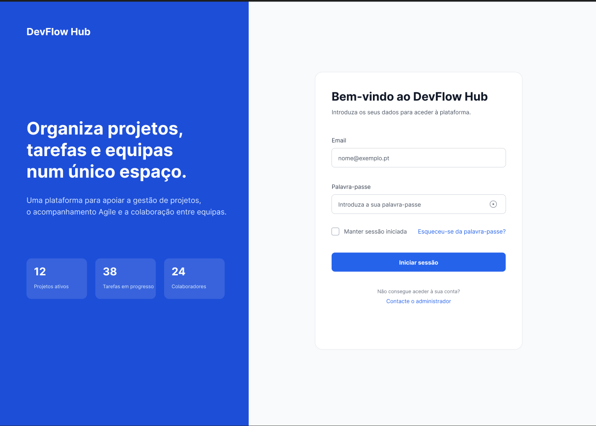
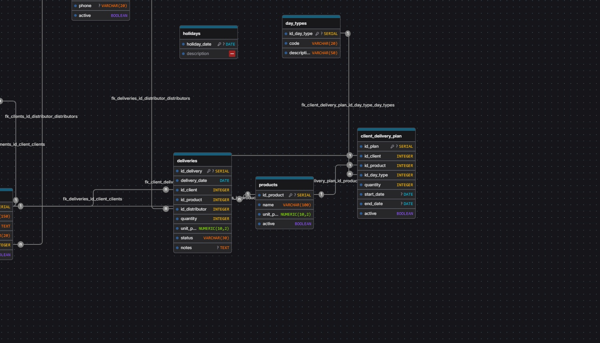

Base real em desenvolvimento de software
Tenho projetos e formacao em Java, C, Python basics, algoritmos, SQL e desenvolvimento web, com foco em aprender atraves de implementacao pratica.
Candidatura para Programador de Software
Sou uma candidata junior focada em desenvolvimento de software, web development, organizacao de informacao, bases de dados e interfaces claras. Esta pagina destaca os elementos do meu portfolio/CV mais relevantes para uma funcao de Programador de Software com interesse em CRM e Salesforce.
Alinhamento com a funcao
Tenho projetos e formacao em Java, C, Python basics, algoritmos, SQL e desenvolvimento web, com foco em aprender atraves de implementacao pratica.
Trabalho com HTML, CSS, JavaScript, TypeScript, React e Angular, criando interfaces responsivas e organizadas para diferentes contextos de produto.
O DevFlow Hub demonstra ligacao entre frontend React + TypeScript e arquitetura Java/Spring Boot com PostgreSQL, alinhada com componentes e integracoes.
Tenho fundamentos de SQL, PostgreSQL e modelacao relacional, com projetos de bases de dados para oficina mecanica e pastelaria.
Uso Git/GitHub, GitHub Pages, validacao manual, QA/testing, debugging e documentacao para manter trabalho mais claro, verificavel e facil de evoluir.
Tenho experiencia em equipas multidisciplinares e trabalho remoto, mais experiencia como LLM Trainer em Portugues e Ingles e background de ensino.
CRM e Salesforce
Ainda nao apresento experiencia direta em Salesforce no meu CV/portfolio atual. O meu alinhamento para esta oportunidade vem da vontade de aprender, da base em desenvolvimento web/software, dos fundamentos de bases de dados, da organizacao de informacao e do interesse em aplicar estes conhecimentos em solucoes CRM adaptadas a necessidades de negocio e clientes.
Projetos relevantes
Projetos selecionados por demonstrarem desenvolvimento web, programacao, bases de dados, interfaces, integracao entre camadas e capacidade de aprender novas tecnologias.

Em progresso · React · TypeScript · Java · PostgreSQL
Aplicacao web full-stack para organizar developers, projetos, tarefas Agile e programas internos, ligando frontend React + TypeScript + Vite a uma REST API Java/Spring Boot com PostgreSQL.

HTML · CSS · JavaScript · GitHub Pages
Portfolio pessoal responsivo com navegacao clara, secoes reutilizaveis e otimizacao de leitura em desktop e mobile.

Python · Pytest · REST API basics · QA
Suite de validacao API com verificacoes de status, schema, regras de negocio e relatorios pytest-html legiveis.

SQL · Modelacao relacional · Bases de dados
Modelo relacional para organizar clientes, veiculos, servicos, mecanicos, pecas e fornecedores, com foco em consistencia e rastreabilidade de informacao.

SQL · Dados operacionais · Organizacao
Modelo de base de dados para operacoes de pastelaria, ligando clientes, encomendas, produtos, ingredientes, receitas e stock.

HTML · CSS · JavaScript · UI/UX
Mostruario de componentes reutilizaveis, estados interativos e padroes de interface que apoiam criacao e manutencao de aplicacoes web.
Competencias relevantes
Experiencia e formacao
A minha experiencia atual combina desenvolvimento web, UI/UX, QA, comunicacao e trabalho em equipa. A formacao recente reforca fundamentos de programacao, Java, bases de dados e testes.
Ago 2025 - Presente · Remoto
FloLabs Innovations Group
Experiencia complementar
Cursos recentes
Contacto
Pode contactar-me por email, telefone/WhatsApp, LinkedIn ou GitHub. O CV em PDF tambem esta disponivel para download direto.